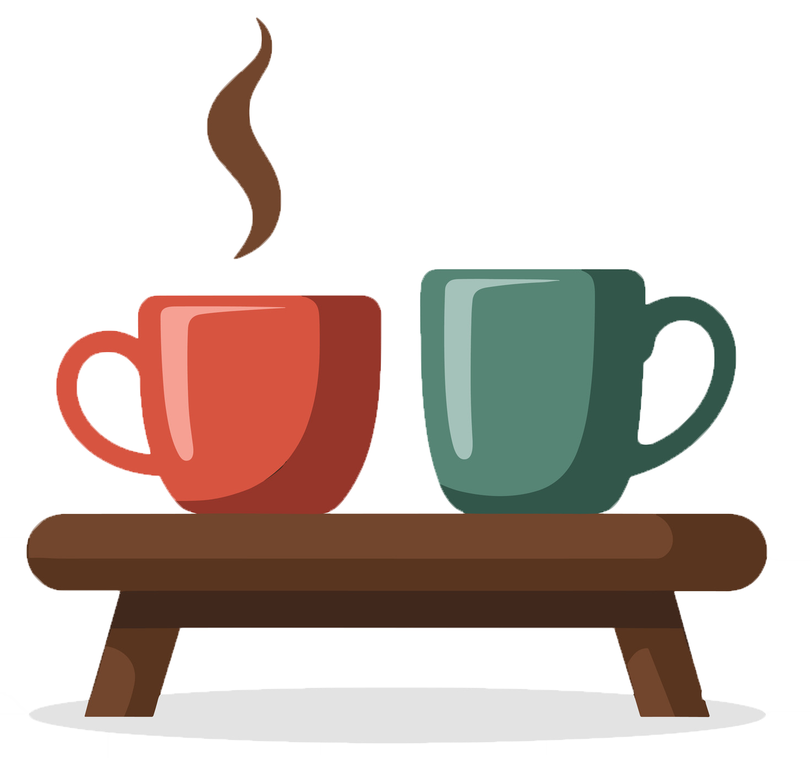

Consultation & Éducation
Comprendre un diagnostic, la neurodiversité ou certains mécanismes psychologiques.
80 $ • 50 minutes
Parfois, une vidéo ou un livre suffit. D'autres fois, on a simplement besoin d'une personne avec qui réfléchir, comprendre et avancer.

Un espace d'échange et de réflexion pour mieux comprendre ton fonctionnement, traverser certaines difficultés et poursuivre ton développement personnel.
Comprendre un diagnostic, la neurodiversité ou certains mécanismes psychologiques.
Développer des stratégies adaptées à votre réalité et améliorer la communication au quotidien.
Un espace pour réfléchir, mieux comprendre ce que tu vis et avancer selon tes besoins.
J'utilise une approche humaniste et centrée sur l'empowerment. Le but n'est pas de te dire quoi faire, mais de réfléchir avec toi à partir de tes forces, de tes valeurs, de tes besoins et de ta réalité.
L'empowerment vise à redonner du pouvoir aux personnes sur leur vie, leurs choix, leurs relations et leurs actions. Même quand une situation semble lourde ou confuse, on cherche ensemble les leviers qui existent encore.
Je ne suis pas “pelleteux de nuages”, mais je crois au potentiel humain sans tomber dans la positivité toxique. On peut nommer ce qui est difficile tout en cherchant des pistes concrètes pour avancer.
Il n'y a pas besoin d'être "au bout du rouleau" pour demander de l'aide. Voici quelques situations où un accompagnement peut faire une différence.
Tu traverses une période où tout semble plus lourd que d'habitude.
Tu souhaites mieux comprendre ton fonctionnement, certaines réactions ou ce que tu vis au quotidien.
La communication est difficile ou certains conflits reviennent constamment.
Tu te sens perdu ou tu cherches plus de clarté dans certaines décisions.
Tu souhaites poursuivre ton développement personnel avec un regard extérieur.
Tu aimerais simplement avoir un endroit où réfléchir librement avec quelqu'un.
Disponibilités actuelles
Les nouvelles demandes sont présentement sur liste d'attente. Si tu souhaites être informé lorsqu'une place se libère, tu peux m'écrire et je t'ajouterai à la liste.
M'ajouter à la liste d'attenteTu peux aussi m'écrire si tu as une question avant de faire une demande.